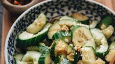

Chinese Cucumber Salad with garlic is a light and refreshing appetizer. The crisp cucumber is mixed with plenty of garlic, drizzled with an appetizing blend of soy sauce, vinegar and sugar, then finished with a few drops of sesame oil. The sauce is light, yet it has a distinct sour flavor with a hint of sweetness, enhanced by the strong aroma of garlic.
